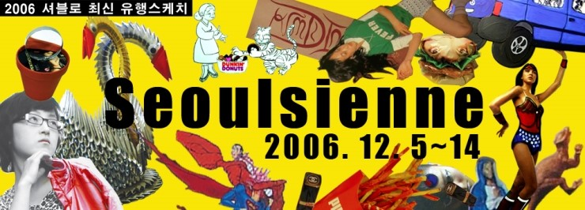
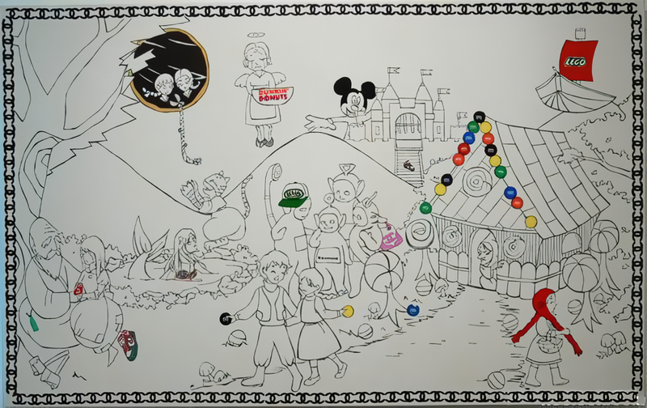

서울지엔느
2006 셔블の 최신 유행스케치展
2006_1205 ▶ 2006_1214

초대일시_2006_1205_화요일_05:00pm
참여작가
강유정_강화수_김세희_박민희_문종훈_임상빈_김영선_김기현_김단비
보충대리공간 스톤앤워터
경기도 안양시 만안구 석수2동 286-15번지 2층
Tel. 031_472_2886
www.stonenwater.org
이 기획안은 세종대학교 회화과 '대학원 크리틱' 프로그램에서 파생된 것으로, 1부 대학원 재학생(세종아트 갤러리)과 2부 졸업생(스톤 앤 워터 갤러리)으로 이원화된 전시이다. 공통된 주제명은 이상의 시에서 부분 차용한 '2006 셔블の 최신유행 스케치'이다. 셔블은 '서울'의 옛말이며, 외래어(일어와 영어의 국문표기)와 혼합된 문구로 여기에는 은연중에 언어사용의 식민주의적 태도가 함축된 느낌이 있다. 두 전시의 기본 모토는 '대중 소비사회'로 일컬어지는 최근의 문화적 상황이 더욱 더 가속화되고 심화되는 상황 속에서 그것과 예술과의 상관관계에 대한 성찰과 진단, 더 나아가 작금의 현상에 대한 참여자 개개인의 전망을 엿볼 수 있는 계기를 마련하기 위해 모색되었다. ● 전시명칭 '서울지엔느'는 패션잡지 Parisienne(프)를 패러디한 것으로, 수도권 중심주의 명칭과 패션을 선도하는 특정 지역성(파리의 감성)을 지칭하는 합성어로 이루어져 있다.
_waifu2x_photo_noise3_scale.png)
강화수의 「2006최신미술유행아이템-종이접기의 놀라운 환상, 미운오리새끼에서 백조로 거듭나기」 는 잡지를 이용한 유닛 접기의 방식으로 만들어진 수공예적 작품이며, 주로 기념일을 위한 선물이나 장식용으로써 노동의 반복과 오랜 정성이 요구되는 형식이다. 일반대중이 선호하는 이미지로써의 백조 그리고 미운오리새끼 이야기가 마치 신분상승을 꿈꾸는 사람들의 기대감을 대변하는 것 같다.
_waifu2x_photo_noise3_scale.png)
박민희의 「특별 부록: 히트 아이템-쉿! 너도나도 몰래 지니고 다닌다는 '명품기원'부적」은 펄 매니큐어로「chanel, louis vitton, hermes, rolex, fendi」 를 재구성하여 표기한 것이다. 부적이란 소위 액땜방지나 소원성취를 위한 기대심리가 만들어낸 작은 신앙심과 같은 것이다. 얼마 전 초등학교 아이들까지 명품계를 들어 이목을 끌었던 뉴스가 떠오른다. 명품족이니 명품증후군 같은 과소비병을 앓고 있는 현대인들을 치유하는 기능으로 또는 소유욕이라는 욕망이 만들어낸 염원을 마치 들어주기라도 하는 냥. 사실 사람들이 갖고 싶어 하는 것은 실제 사물이라기보다는 그 사물을 갖춤으로써 얻어지는 효과들이다.
_waifu2x_photo_noise3_scale.png)
문종훈의 「Triple A 의 Brain Ticket」은 마치 초현실주의의 풍경화를 보는 듯하다. 어질어질한 동심원 배경, 밀려드는 파도 속 누드군상, 곧 허물어질듯 한 벽돌더미, 요상하고 폭력적인 붉은 형체로 위협받는 목 잘린 슈퍼맨과 성모 마리아상, 외로이 갇혀있는 양, 한 청년의 뇌를 빼내고 있는 섬뜩한 여자 등이 이미지를 구성하고 있다. 뇌가 매매도구가 된다는 것은 아마도 우리들의 의식이 이런 공포스러운 풍경으로 대체된다는 암시일지도 모른다.
_waifu2x_photo_noise3_scale.png)
김기현의 「DANGEROUS PRODUCTION-아찔한 스타일&스토리 코디」는 잡지와 투명필름을 겹치고 그 위에 부분적으로 채색한 것이다. 잡지 속 모델들은 한가로운 배경에 고급스러운 옷들과 액세서리들로 치장하고 세상사에는 무관심해 보인다. 때문에 그들은 부러운 대상이 되기도 한다. 작가는 이들을 이용하여 다른 이야기 구성을 보여준다. 각색된 스토리에 맞춰 위장된 모델들은 노래방 도우미로, 쓰레기 매립장에 쓰러져 낮잠을 자는?노숙자로, 때로는 밤새워 먹는 대식가로 역할을 달리한다. 어차피 잡지의 스토리도 꾸며진 이야기들인 걸 보면 오히려 이렇게 재구성된 장면들이 훨씬 현실적인 풍경들이 될 수도 있을 것이다.
_waifu2x_photo_noise3_scale.png)
임상빈의 「Try-19세 선인장 키우기」는 전시장 창문 틈새로 보이는 건너편 속옷가게를 은밀히 주시한다. 그곳은 야릇한 자세를 취하고 있는 외국여성과의 맞닥뜨림이 있는 장소이다. 그녀의 시선을 받아가며 또는 관망하며 무럭무럭 자라나는 돋보기 선인장이 왜곡된 굴절상을 투영하고 있다.
_waifu2x_photo_noise3_scale.png)
김세희의 「이달의 Hot Review: '햄버거는 프라다를 입는다.'- Converse 햄버거양의 파란만장 Prada 햄버거 되기」는 잡지로 만들어진 인스턴트식품들이다. 헌데, 상표가 이상하다. 맥도날드, 버거킹과 같은 명칭들이 상품 브랜드로 바뀐 것이다. 결국 이것이 우리가 먹는 것 혹은 소비하는 것이 된다. 눈으로 먹고, 머리고 맛보는 그 무엇들...

김단비의「Brand fantasy-그와 그녀와 그들의 속사정」은 동경의 대상으로 작용하는 브랜드 상품과 동화 이미지를 결합시킨 광고 같은 그림이다. 전래동화에 등장하는 유리 구두와 떡은 단순한 도구나 먹거리가 아니었다. 이것들은 그 세계에서 사건의 해결책이자 엄청난 대가를 치루는 교환가치로서 의미가 크다. 그렇게 상징 기호로써 읽혀지고 전해지면서 신화화된다. 브랜드는 이렇게 하여 세계 곳곳을 넘어 과거로까지 그 영역을 넓혀가고 있다.
_waifu2x_photo_noise3_scale.png)
강유정의 「생생오감 대리만족-12 steps to the trend」은 잡지위에 일상용품을 놓고 함께 찍은 사진 작업이다. 그런데 이 작업은 진지한 관찰을 요한다. 왜냐하면, 실제와 화보의 구분이 선명하지 않고 모호하기 때문이다. 마치 우리들 눈을 시험하는 것처럼. 그러나 꼼꼼히 살펴보면 크기와 시점의 변화가 발견될 것이다. 이렇게 되고 보니 우리들의 일상용품도 잡지와 동일한 지위와 가치를 갖게 된다.
_waifu2x_photo_noise3_scale.png)
김영선의 「석수시장 패션 따라잡기-서울 도봉2동 패션리더 아줌마의 제안」은 시장상인들로부터 석수시장 패션에 관한 설문조사를 바탕으로 시장에서 구입한 의상을 입고 직접 포즈를 취하는 사진작업이다. 이것은 모델이 되고 싶은 욕구의 표출이라기보다는 은연중에 따라하는 모델식 포즈와 사진의 시점을 폭로 또는 묘사하고 있다.
■ 스톤앤워터